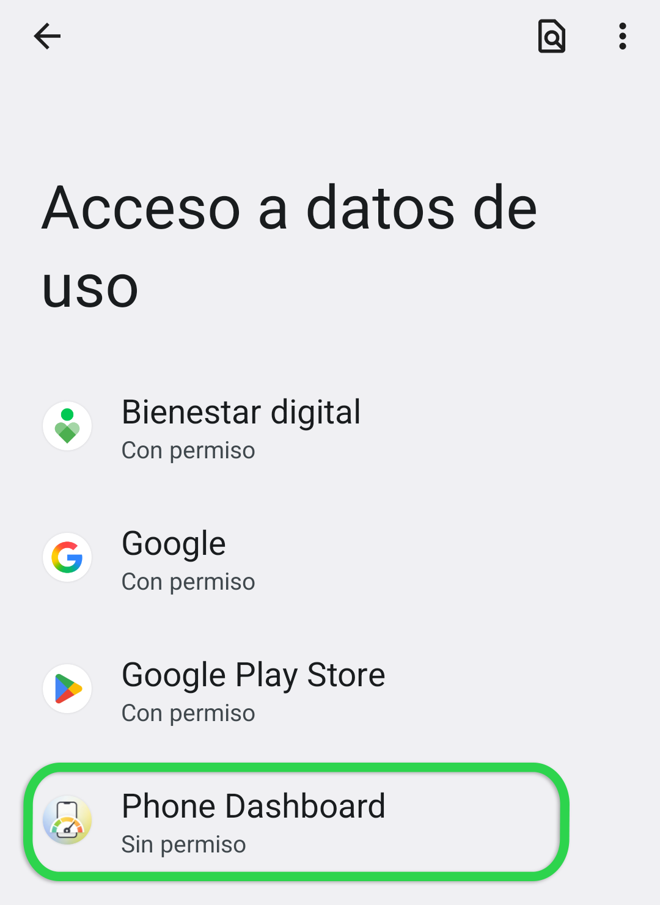
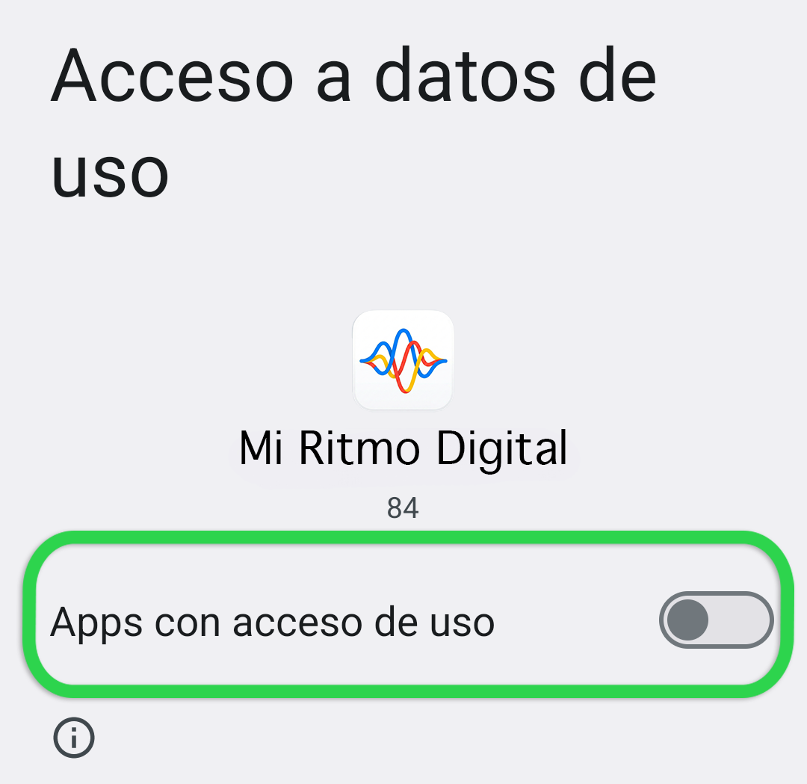

Para funcionar correctamente, Mi Ritmo Digital necesita permiso para leer los datos de uso de tus aplicaciones.
En la siguiente pantalla, serás dirigido a la configuración de tu dispositivo para otorgar a Mi Ritmo Digital permiso de acceso a esta información. Cuando estés en la pantalla Apps con acceso de uso, por favor desplázate y selecciona Mi Ritmo Digital.

En la siguiente pantalla después de seleccionar Mi Ritmo Digital, verás un interruptor con la etiqueta Permitir acceso de uso. Activa ese interruptor para otorgar el permiso.

Aunque nuestro equipo de investigación tendrá acceso a datos sobre qué aplicaciones tienes instaladas y con qué frecuencia las usas, no podremos acceder a ningún detalle sobre cómo interactúas con tus aplicaciones o la información que ingresas en ellas.
Una vez completado este paso, usa el botón Atrás de Android para volver a esta pantalla y continuar con los siguientes pasos.
Ten en cuenta que diferentes fabricantes de dispositivos pueden tener pantallas con apariencia diferente. Si tienes problemas para completar este paso, por favor contacta al equipo de investigación para obtener asistencia.